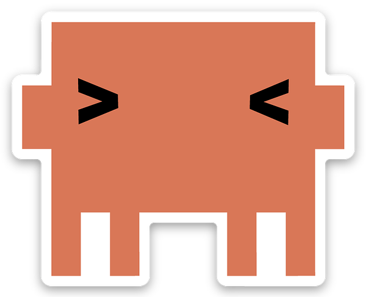

Push the harness to its limit in a brownfield repo — and prove the model isn't the moat. The harness is.
Luan Moreno
Principal Forward-Deployed EngineerField CTO Office

Claude Code
THE JUDGMENT
Orchestrates, decides, reviews — the pilot that governs the loop.
vs
Codex
THE ADVERSARY
The skeptic that tries to refute — pressures the work until it proves itself.
vs
Kimi
THE CRANK
The cheap workhorse that executes at scale — small & medium tasks, nonstop.
One contract · three engines · no human in the middle of the loop.
ACT 0 · WHERE EVERYTHING REDUCES TO
0.
The Atom
Before the harness, before the loop, before the dark factory — there is one unit of work. Every autonomous system that ships is only as good as the atom it runs.
GET THIS WRONG — AND NO MODEL, NO HARNESS, NO LOOP CAN SAVE IT
ACT 0 · WHY THE ATOM, WHY NOW
THE CONSTRAINT IN SOFTWARE JUST MOVED — UPSTREAM
The model isn't the bottleneck anymore. The task is.
Once model capability crossed a threshold, code generation became a commodity — Claude, Codex, and Kimi all do it. So the hard part stopped being writing the code and became defining the unit of work you hand the machine.
</>
UNTIL ~2024
The model was the limit
Humans wrote the code; AI autocompleted. Capability was scarce, so better model = better output. The bottleneck was generation.
⇄
2025 → 2026
Generation got commoditized
Agents draft, debug, and iterate across whole repos. The model is no longer scarce — three engines do it interchangeably.
◆
THE LIMIT TODAY
The task is the constraint
Code quality is now a function of specification completeness, not model intelligence. Underspecify the task → plausible-but-wrong output.
“Once model capability crosses a threshold, code quality becomes a function of specification completeness, not model intelligence.”
— H. SAGHIR, “YOUR CODING AGENT IS UNDER-SPECIFIED” · 2026
ACT 0 · WHY THE ATOM, WHY NOW
NOT MY OPINION — WHERE THE WHOLE FIELD IS CONVERGING
The unit of work is the spec — not the file.
Independently, across 2026, the same conclusion keeps surfacing: teams are reorganizing around an executable, self-verifying unit of work. Most agent failures aren't model failures — they're underspecified-task failures: they fail silent and drift from intent.
I
The New Unit
Spec, not file
The primary unit of software development is no longer the code file — it's the executable spec.
AI in Plain English · Apr 2026
II
The New Contract
Spec as API
Specifications are no longer documentation. They're the API between what you want and what you get.
D. Lapsley · Feb 2026
III
The New Bottleneck
Work definition
The bottleneck shifted upstream to work definition. Poorly specified tasks look complete but are functionally incorrect.
Dev|Journal · Jun 2026
Different authors, one conclusion. Everyone names the same unit — almost nobody makes it carry its own proof. That gap, a task that verifies itself, is exactly what the Atom closes. So what does an underspecified task actually cost?
ACT 0 · THE PROVOCATION · FROM “WHY” TO “WHAT IT COSTS”
SO — WHAT DOES AN UNDERSPECIFIED TASK ACTUALLY COST YOU?
The agent isn't lost. The task never told it what “done” means.
We just saw the field agrees the unit of work is the spec. Here's the catch: hand an agent a paragraph — no behavior, no runnable definition of done, no blast-radius — and it won't stop. It fills the gaps with guesses, confidently. The harness can only inject what you wrote down — and most tasks write down a fraction.
MODE 01
FAILS SILENT
No hesitation, no “this feels wrong.” The agent ships confident, fast, plausible-but-wrong output — the kind a code review skims right past.
the dangerous one
MODE 02
DRIFTS FROM INTENT
Band-aid fixes, architectural drift, silent semantic errors — and it happens even withCLAUDE.md and typed interfaces in the loop.
the slow burn
MODE 03
COSTS MORE TO UNPICK
Undoing wrong-but-complete work runs higher than the rigorous spec would have cost up front. The shortcut is the expensive path.
the tax
▲ All three failure modes share one root cause
None of these are model problems — they're missing-contract problems. Fix the unit of work and all three close at once. That fix is the Atom: a task that carries its own definition of done. Let's open one up.
ACT 0 · THE ANATOMY · WHO AUTHORS WHAT
YAML FRONTMATTER + SIX ZONES — AND ONLY TWO ARE YOURS TO WRITE
The human writes two zones. The atom carries the rest — gated.
You author intent and behavior. Everything downstream — the runnable contract, the bounds, the lifecycle — is structure the executor is held to. Zone 2 is the gate: the shell exit code, not a human, decides done.
1
Intent
Human · why
Goal + Context, lean (≤100 lines). The one thing only a person can author.
zone 1
→
2
Behavior
Human · what
Given / When / Then with stable B-N ids — each eval traces back to one.
v3 zone
→
3
Contract
Gate · proves
≥3 runnable bash evals + Exit Check. The moat — the shell exit code IS the contract.
zone 2
→
4
Guardrails
Structure · bounds
Anti-Patterns + Do-Not-Touch + Rollback — the blast radius the executor may move in.
zones 3–5
→
5
Lifecycle
Machine · runs
Frontmatter + Open Questions — status, profile, A2A-mappable, surfaces ambiguity.
meta + zone 6
Every other task format is readable. Only the Atom makes step 3 executable — so a failed gate sends the work back, never asks a human. That's the line between a ticket and an atom.
ACT 0 · THE DIFFERENTIATOR
SAME dbt TASK — A TICKET vs A SELF-VERIFYING ATOM · (THE DEMO WE'LL BUILD LIVE)
Same job: a daily-revenue dbt model on DuckDB. A paragraph vs a contract.
▲ THE TICKET · READS FINE — LEAVES 4 DECISIONS TO A GUESS
# JIRA-812Title: Build a daily revenue model
Body: We need daily revenue for the
dashboard. Use the orders data in
the DuckDB warehouse. Add it to dbt.
# revenue from orders or payments? .... ?# count unpaid / refunded orders? ....... ?# grain — by day? by day+country? ....... ?# done = ? someone eyeballs the numbers→ ships a number. quietly the wrong one.
→
▲ THE TASK-SPEC · THE SAME JOB, MADE PROVABLE
--- T-260625-daily-revenue.md ---profile:standardeffort: S
touches_paths: [models/marts/daily_revenue.sql]
B-1Given raw.orders + raw.payments,
When daily_revenue builds,
Then revenue = SUM(payments.amount)
where status='captured', grain = day.
eval_1(){ dbt build -s daily_revenue; }
eval_2(){ dbt test -s daily_revenue; } # [B-1]eval_3(){ duckdb -c "$RECONCILE_SQL"; }
→ done = three exit-0s. not an opinion.
Both ask for “daily revenue.” Only the Atom says which revenue, at which grain, proven how. The ticket would have shipped order totals — the spec ships captured payments, reconciled.You'll watch this exact atom run tonight.
Every Task-Spec runs the same six-step loop. The last step is the one that closes it.
Every step below is a real script in the skill — not a diagram. Read them left to right: each one emits an artifact the next one consumes, and only two are stamps you can trust downstream.
STEP 01
Author
Scaffold from the template and fill the six zones — intent, behavior, evals, guardrails.
Why: the human is here, and only here, for creation — setting intent.
EMITS · a draft T-*.md
generate-task-spec.sh
STEP 02
Validate
A structural lint — all zones present, fields valid, eval functions are real bash. No execution yet.
Why: catches a malformed spec before a single token is spent on it.
EMITS · pass / fail
validate-task-spec.sh
STEP 03
Pre-gate
Runs the evals to confirm they're well-formed enough to delegate — failure here is expected.
Why: the only path to signed_off: true — the contract that says “safe to hand off.”
STAMPS · signed_off
safe-to-delegate.sh --stamp
STEP 04
Dispatch
The signed spec is handed to whatever engine the execution_backend names.
Why: the engine is now interchangeable — same contract, any of the three.
ROUTES · claude · codex · kimi
/kimi:crank · Task() · codex run
STEP 05
Execute
The engine loops on the evals until they pass — or it exhausts the iteration budget and parks.
Why: the agent grades its own work against the evals, with no human in the loop.
EMITS · code + green evals
ref-executor.sh
★ CLOSES THE LOOP
STEP 06
Accept
Re-runs the evals from a clean checkout, checks the change set stayed in-bounds, re-verifies the sign-off.
Why: asks the opposite question — is the work REAL? The only step that writes accepted: true.
STAMPS · accepted: true
accept-task.sh --stamp
Every agent framework ships the first five — author, validate, dispatch, even run the tests. Almost none ship the sixth. Accept re-runs the evals from a clean checkout, with the agent gone — turning “the model says it’s done” into a clean room that proves it.That’s the loop, closed — and what makes the engine swappable.
ACT 0 · THE CONFORMANCE LADDER
HOW FAR CAN YOU WALK AWAY? — THREE LEVELS, EACH PROVABLE
Not all executors earn the same trust. The Atom grades them.
The same format that defines the task also certifies who may run it. Three cumulative levels — each a bar you can prove with one command, not assume. The higher the level, the less you have to watch.
L0
Reads & runs the evals
Give it a signed spec; it produces work that makes the Exit Check return 0. A plain bash loop can reach this bar.
SUPERVISED · ONE-SHOTyou still watch every run
L1
Honors the lifecycle
L0 + it locks the task (status → in-progress) before starting and releases it when done — so two executors never grab the same one.
SHARED BACKLOG · SAFElock prevents double-picking
L2
Honors the budget — and parks
L1 + when it can't win within budget_iterations, it stops and parks with a reason instead of burning forever. This is the bar to walk away.
THE DARK-FACTORY BARrun it overnight, trust the result
That's the Atom: a task that carries its own proof — and grades who may run it. Now the engines (Claude, Codex, Kimi) become interchangeable, and the only question left is the harness around it. That's the rest of the night.
ACT 1 · NOW THAT THE ENGINE IS SWAPPABLE — WHAT'S OUT THERE TO SWAP?
1.
The Landscape
Three vendors shipped a coding agent every few weeks this year. The atom doesn't care which one runs it — so let's meet the three we'll put on the same task tonight.
SAME ATOM · THREE HARNESSES · ONE BROWNFIELD REPO
ACT 1 · THE GROUND IS MOVING
SIX MONTHS, THREE VENDORS, A RELEASE EVERY FEW WEEKS — ALL DATED, ALL REAL
This didn't creep in. It arrived — all at once.
Read the dates left to right. Every headline is really about the same thing — teammates, desktops, CLIs, token budgets, swarms. The race stopped being about the model and became the harness around it.
DEC 2025
CODEX GOES AGENTIC
OpenAI ships GPT-5.2-Codex — “the most advanced agentic coding model” — as a one-line CLI: npm i -g @openai/codex.
openai.com · Dec 18 2025
FEB 2026
“THE IDE IS THE WRONG TOOL”
OpenAI launches Codex Desktop — agents as teammates you direct and set loose. Forbes: “agentic AI rivalry intensifies.”
Forbes · devclass · Feb 3 2026
FEB 2026
CLAUDE CODE EDGES AHEAD
Claude Code passes Codex on the VS Code agentic-AI marketplace leaderboard — adoption, not just benchmarks, becomes the scoreboard.
Visual Studio Magazine · Feb 26 2026
APR 2026
KIMI SCALES THE SWARM
Moonshot's Kimi K2.6 brings long-horizon coding — an agent swarm to 300 sub-agents and 4,000 coordinated steps.
MarkTechPost · Apr 20 2026
MAY 2026
OPUS 4.8, BUILT FOR AGENTS
Anthropic ships Claude Opus 4.8 — effort controls, dynamic workflows, cheaper fast mode. The model tuned for the harness, not the chat box.
anthropic.com · thenewstack · May 28 2026
JUN 2026
KIMI CHASES THE TOKEN BILL
Kimi K2.7-Code lands with 30% lower token usage and a HighSpeed mode — the open-weight contender competing on cost-per-task.
TechTimes · devops.com · Jun 12 2026
Six headlines, three vendors, half a year. Not one is about a better autocomplete — they're about teammates, desktops, swarms, and budgets. The product was never the model. It's the harness.So here are the three we'll stress-test.
ACT 1 · THE CONTENDERS
THREE ENGINES · THREE HARNESS PHILOSOPHIES · ONE INTERCHANGEABLE CONTRACT
Same atom in. Three very different harnesses around it.
The atom we built in ACT 0 is engine-agnostic by design — execution_backend just names who runs it. These three differ not in whether they can take the contract, but in how their harness drives it.
ANTHROPIC
Claude Code
Opus 4.8 · 1M context
The deep-harness incumbent — subagents, skills, hooks, MCP. Treats the repo as a workspace and orchestrates rather than completes.
why it's here · the harness benchmark to beat
OPENAI
Codex
GPT-5.2-Codex · CLI + Desktop
The “agents-as-teammates” challenger — built on the thesis that the IDE is the wrong tool. Tight loop, set-and-review, native app.
why it's here · the opposite harness bet
MOONSHOT
Kimi
K2.7-Code · open weight
The open-weight wildcard — swarms to 300 sub-agents, 30% cheaper tokens. Competes on cost-per-task and scale, not brand.
why it's here · can open + cheap keep up?
Incumbent, challenger, wildcard — three harness philosophies, one shared contract. If the atom is doing its job, all three should be able to run it — the only question is how well each harness drives it.
ACT 1 · THE EXPERIMENT
HOLD THE TASK CONSTANT · VARY THE HARNESS · MEASURE WHAT MOVES
The model is the constant. The harness is the variable.
A fair test fixes everything except the thing under study. So we fix the atom — one signed Task-Spec, identical evals, the same brownfield repo — and hand it, unchanged, to each harness. Whatever differs in the result is the harness, not the model.
HARNESS A
Claude Code
Strength
1M context holds the whole repo — best at not breaking working code.
Watch-out
The premium tier — highest cost per task of the three.
vs
HARNESS B
Codex
Strength
Hard OS-level sandbox (Seatbelt / Landlock) + strong step-by-step reasoning.
Open weight (self-hostable), lowest token cost, 71% SWE-bench at scale.
Watch-out
Shipped without a safety card — least independently verified of the three.
A
Held Constant
The atom
One signed Task-Spec, identical evals, the same DuckDB + dbt repo, one shared definition of done.
the controlled variable
B
What We Watch
The signals
Did it pass accept-task.sh? Iterations to green, tokens spent, and did it stay in-bounds?
the measurements
C
The Verdict
One grader
The atom grades all three the same way — so the scoreboard measures the harness, not the hype.
harness, not hype
This is the whole experiment in one line: give three harnesses the same self-verifying atom and see which one walks furthest before a human has to step in.Let's run it.
ACT 2 · BEFORE WE RUN IT — SEE THE MACHINE WE'RE ABOUT TO WIELD
2.
The Thesis
We've said “harness” thirty times and never defined it. Time to. Because the engine is a commodity — and everything that makes one engine beat another lives in the apparatus around it.
THE MODEL IS RENTED · THE HARNESS IS BUILT · THE HARNESS IS THE MOAT
ACT 2 · THE DEFINITION
WHAT “HARNESS” ACTUALLY MEANS — AND WHY IT, NOT THE MODEL, IS THE WORK
A model answers. A harness makes it act — safely, repeatably, in your repo.
The harness is everything wrapped around the raw model: the context you feed it, the tools you grant it, the policy that bounds it, the work you delegate, and how you package and ship all of it. Swap the model and the apparatus still stands. That apparatus is the product — and it's the part you actually engineer.
THE MODEL · RENTEDis a commodity — butTHE HARNESS · BUILTis the moat
Every team renting the same three engines has the same raw horsepower. The one that wins built the better harness — sharper context, deeper tools, tighter policy. “Prompt engineering” was a feature. Harness engineering is the discipline.
ACT 2 · THE DISTINCTION THAT PROVES THE THESIS
EVERY ENGINE SHIPS THE SAME LOOP · ONLY YOU BUILD THE HARNESS
The loop is generic. The harness is yours.
Strip any agent down and you find the same four-beat loop — think, call a tool, observe, repeat. Claude, Codex, Kimi all run it; it's commoditized. What surrounds that loop — the context, tools, policy, delegation — is bespoke to you. That's where the advantage actually lives.
▲ THE LOOP · EVERY ENGINE HAS THIS — IDENTICAL
# the agentic loop — generic, commoditizedwhile not done:
thought = model.reason(context)
action = model.pick_tool(thought)
result = execute(action) # bash, read, write…
context = context + result # observe# swap Claude → Codex → Kimi: same four beats.# nobody wins here. it's table stakes.
vs
▲ THE HARNESS · THIS IS WHAT YOU ENGINEER
# the harness — bespoke, proprietarycontext:CLAUDE.md + skills loaded on demand
tools:MCP servers wired to your systems
policy:hooks + permissions bound the loop
delegate:subagents with isolated context
ship:plugins package it, versioned
→ this is the moat. it doesn't come in the box.
Same loop on the left for all three engines. Everything on the right is a choice you made — and the sum of those choices is the difference between an agent that ships and one that drifts. The loop is rented. The harness is built.
ACT 2 · LOOP & AUTONOMY · THE LADDER
FIVE LEVELS OF AN AUTONOMOUS AGENTIC SYSTEM — AND WHERE THE INDUSTRY ACTUALLY SITS
So — how autonomous is your agentic system, really?
The data is blunt: most teams are still at L1–L2 — agents are tried, rarely trusted unattended. The gap between “tried” and L5 isn't the model. It's the harness.
L1
Assisted
Human writes the code; AI autocompletes the next line.
51% USE AI DAILYStack Overflow 2025
L2
Partial / Pair
AI drafts; human edits and approves line-by-line. ~42% of committed code is now AI-assisted.
~52% STOP HEREcopilot-only / no agents
L3
Conditional / Agentic
AI executes multi-step tasks end-to-end; human reviews the output.
25% USE AGENTS REGULARLYSonar 2026 · 64% have tried
L4
High
AI runs the feature end-to-end; human spot-checks at gates.
42% OF ORGS TRUST THISagents lead w/ oversight · Anthropic 2026
L5
Dark Factory
AI runs unattended batches; gates verify; human harvests lessons.
THE BAR FEW CROSS0–20% “fully delegate” · needs a real harness
ACT 2 · LOOP & AUTONOMY · HUMANS vs MACHINES
THEY DON'T DIFFER IN SKILL — THEY DIFFER IN HOW THEY FAIL
Humans fail loud. Machines fail silent — same error, no hesitation, no warning.
So you don't trust a machine less — you trust it differently: through structure, not through reading. That structure is the harness.
The Human
TRUST IS SCALAR · FAILS LOUD
One number that grows with experience — and generalizes
Trusted on a parser ⇒ trusted not to nuke prod on a Friday
Fails loud — hesitates, asks, “this feels wrong”
Fears the irreversible — feels the weight of rm -rf
Earns the right to stop being reviewed — the check disappears
The Machine
TRUST IS A VECTOR · FAILS SILENT
Earned per action, indexed by blast radius — does not generalize
Same calm writing a parser as proposing DROP TABLE
Earns the right to have review automated — the check is encoded
Human trust is earned. Machine trust is engineered — you don't grant it, you gate it. Same discipline, encoded once — so you stop verifying by hand, not stop verifying.
ACT 2 · LOOP & AUTONOMY · THE ENGINE
THE LOOP ENGINE — WHAT DRIVES MANY ATOMS UNATTENDED (NOT THE SIX-STEP ATOM LIFECYCLE)
Every loop engine needs six canonical parts. The last one is the one that compounds.
Not the atom's six-step lifecycle from ACT 0 — this is the engine that runs that atom, over and over, with no one watching. Get all six and you can walk away; miss the sixth and it just repeats instead of improving.
PART 01
Goal
a queue of independent items to drive to done
PART 02
State machine
pending → in‑progress → done | stalled
PART 03
Driver / clock
self-fires the next tick — no human
PART 04
Memory
durable state on disk, not in the chat
PART 05
Termination
drains, then stops — no busywork
★ THE FLYWHEEL
PART 06
Failure → Skill
a recurring stall becomes a new skill the next run uses
ACT 2 · THE MATURITY LADDER
PROMPT → CONTEXT → HARNESS ENGINEERING
Three levels of talking to a model. Only one is a system.
Each level adds what the one below it can't keep: a prompt dies with the chat; context is rebuilt by hand every time; the harness persists and self-loads — it governs every run without you reassembling it.
Level 1
Prompt Engineering
Crafting one good instruction in the moment — word choice, examples, phrasing.
Trait: per-task wording. Limit: dies with the chat — no memory, no reuse.
→
Level 2
Context Engineering
Curating what the model sees — files, retrieval, examples, the right slice of the repo.
Trait: per-session relevant knowledge. Limit: still assembled by hand, every single time.
→
Level 3
Harness Engineering
Encoding the whole working environment — rules, procedures, delegation, policy, tools.
Trait: persistent, self-loading, governs every run. This is the system — not a session.
Prompt and context evaporate when the window closes. The harness is the part that stays — the onboarding binder, the org chart, and the review culture, encoded once and re-run forever.
ACT 2 · THE ANATOMY
A HARNESS HAS RINGS — EACH ADDS WHAT THE RAW MODEL LACKS
A harness is multi-layered — not a single wrapper.
ACT 2 · THE HARNESS, EXPLODED
SEVEN LAYERS — NAMED AS CONCEPTS, NOT ONE VENDOR'S API · THIS IS THE SCORECARD
Seven layers turn a model into an agent.
Each engine implements these differently — some have all seven, some only a few. Learn them as concepts and you can read any engine's harness. (The concrete name under each is the reference artifact.)
LAYER 01
MEMORY
Persistent project truth loaded every session — architecture, conventions, rules.
e.g. CLAUDE.md / AGENTS.md
LAYER 02
PROCEDURES
Reusable instruction sets, loaded on demand — the “how we do X” playbooks.
e.g. Skills / SKILL.md
LAYER 03
DELEGATION
Side work handed to an isolated context — research, audits, parallel tasks.
e.g. Subagents / Task tool
LAYER 04
POLICY
Automated guardrails on the loop — block, validate, log, inject at lifecycle events.
e.g. Hooks + permissions
LAYER 05
TOOLS
External systems exposed as callable tools over an open protocol — repos, DBs, APIs.
e.g. MCP servers
LAYER 06
INVOCATION
User-triggered shortcuts to a defined action — the verbs you type at the prompt.
e.g. Slash commands
LAYER 07
DISTRIBUTION
The wrapper that bundles the other six into one versioned, shareable, namespaced unit.
e.g. Plugins + marketplaces
TONIGHT
WHAT WE WIELD
We drive the live demo with Procedures + Distribution — a skill, shipped as a plugin.
layers 02 + 07, next
Hold this grid up to any engine and you get a scorecard. Claude Code fills all seven deeply; Codex covers most; Kimi fewer.Same loop, different harness surface — which is exactly what tonight measures.
ACT 2 · LAYER 07 · DISTRIBUTION
PLUGINS — THE WRAPPER THAT TURNS A HARNESS INTO A PRODUCT YOU SHIP
A plugin is your harness, boxed — versioned, named, shareable.
The first six layers live as loose files in one repo. A plugin bundles them under a manifest — one namespaced, versioned unit you install once and share across every project and teammate. It's how a harness stops being “my config” and becomes “our platform.”
▲ ONE BUNDLE · SIX LAYERS INSIDE A MANIFEST
# a plugin = the harness, packaged
my-harness/
├── .claude-plugin/plugin.json# name + version
├── skills/ → PROCEDURES
├── agents/ → DELEGATION
├── hooks/ → POLICY
├── commands/ → INVOCATION
└── .mcp.json → TOOLS$ /plugin install my-harness@1.2.0# one line. the whole harness, everywhere.
Versioned
Pin @1.2.0. Upgrades and rollbacks are explicit, not “whatever's in my dotfiles today.”
Namespaced
Invoke as /my-harness:deploy — no collisions with anyone else's verbs.
Shareable
Publish to a marketplace; a teammate installs your entire harness in one command.
Skills, agents, hooks, tools — loose, they're a clever setup. Boxed as a plugin, they're a product with a version number and a name. That's the moat, made portable.
ACT 2 · LAYER 02 · PROCEDURES
SKILLS — A REUSABLE PROCEDURE THE AGENT LOADS ONLY WHEN IT'S NEEDED
A skill is a procedure the harness reaches for — on demand.
A plain file: a description the model reads to decide when it applies, and a body that says how. It costs nothing until it's relevant, then loads itself into context. It's how you teach the harness a repeatable move without bloating every prompt.
▲ SKILL.md · DESCRIPTION DECIDES WHEN · BODY SAYS HOW
--- skills/daily-revenue/SKILL.md ---description:Build & verify a daily-revenue dbt mart on DuckDB. Use when asked for revenue-by-day from raw orders/payments.# ↑ the model reads THIS to self-invoke## Steps
1. model SUM(payments) where captured, by day
2. dbt build -s daily_revenue
3. reconcile vs captured payments; accept→ loaded only when the task matches.
On-demand
Zero context cost until the description matches — then it loads itself. Many skills, no bloat.
Two ways in
The model auto-invokes when relevant, or you fire it by name — same file, both paths.
Tonight
The live demo is exactly this skill — driving the ACT 0 atom, on all three engines.
That's the harness defined, distinguished from the loop, and exploded into seven layers — two of which, a skill shipped as a plugin, we're about to run live. Same atom, same skill, three engines. Let's go.
ACT 3 · NOW WE RUN IT — FUZZY BRIEF, DOWN TO MERGED CODE
3.
The Build
You don't write the system. You compile intent into it — a fixed descent of seven passes, each binding the right engine and ending at a gate.
SEVEN PASSES · ONE FORK · ONE GATE — THE ATOM & HARNESS, IN MOTION
ACT 3 · CONVERGE · THE METHOD
EVERY PASS LOWERS ALTITUDE, BINDS AN ENGINE, ENDS AT A GATE
You don't write the system. You compile intent into it.
Each pass drops one level of altitude, binds the right engine for that altitude, and ends at a gate that must pass before the next begins. The discipline is the gate. Today the gate is you — you confirm, approve, review. The dark factory replaces each human gate with a runnable eval. The passes don't change — only who stands at the gate.
EVERY PASS
Lowers altitude
Intent → structure → plan → tasks → code. Each step is closer to something a machine runs.
BINDS
An engine
The right tool for the altitude — Claude to think, Codex to attack, Kimi to crank.
ENDS AT
A gate
Converged means an eval passed — not that you feel done. The gate is the unit of trust.
ACT 3 · CONVERGE · THE SPINE
SEVEN PASSES · ONE FORK · ONE GATE
The whole method, on one line.
Intent → Structure → Decomposition → Consensus → Tasking → Harness → Execution. Each output is the next input — the chain descends from a fuzzy brief to merged code.
PASS 1
Intent
Claude CoWork
spec answers brief
PASS 2
Structure
Claude Code · repo
system understood
PASS 3
Decompose
Claude Code · auto
two plans exist
PASS 4
Consensus
Codex adversary
no objection left
PASS 5
Tasking
task-spec skill
each has an eval
PASS 6
Harness
agents-kbs skill
control layer up
PASS 7
Execute
Workflows · Kimi
eval passes = merged
THE INVARIANT
Every pass lowers altitude, binds an engine, ends at a gate. You are converged when the eval passes — not when you feel done.
ACT 3 · PASS 1 OF 7 · ALTITUDE: INTENT
INTENT · RECEIVE & COMPREHEND THE BRIEF
The client hands you the problem. You produce the spec.
ENGINE · Claude CoWork (project)IN · brd-analytical-backbone.pdfOUT · tech-spec-analytical-engine.pdf
UNDERSTANDReadthe BRD like a senior engineer — real problem, who hurts, their numbers
→
INTERROGATEGrillthe 2-3 questions that most change how we build it
→
CRYSTALLIZESpecthe technical answer to their problem — your consulting deliverable
GATE
You can state the client's problem back correctly, and the tech-spec answers it. Born as a PDF — a consensus object you circulate before any code. No premature implementation the brief didn't justify.
ACT 3 · PASS 2 OF 7 · ALTITUDE: SYSTEM
STRUCTURE · COMPREHEND THE SPEC AGAINST THE REPO
Open the brownfield. Understand a system you didn't write.
ENGINE · Claude Code · on the repoIN · tech-spec + src/OUT · session understanding (no file)
COMPREHENDExplainthe system end to end — the brownfield + what the spec adds
→
GROUNDCheckdoes the spec match what's actually in src/ — schema, generator, raw.*?
→
CONFIRMMapa clean component + dependency map — what to build, in what order
GATE · NO ARTIFACT
You can explain the full system, consistent with the spec and the real repo. Pass 2 produces no file — its output is the loaded understanding in the session. Keep it open into Pass 3: the understanding is the handoff.
ACT 3 · PASS 3 OF 7 · ALTITUDE: PLAN
DECOMPOSITION · BREAK IT INTO PLANS
Two plans, along the natural seam.
ENGINE · Claude Code (Auto) · same sessionOUT · sketch/duckdb-dbt-med-arch.planOUT · sketch/fast-api-mcp.plan
DECOMPOSESeamsplit the work — transformation vs serving — and justify the boundary
→
PLAN AMedalliondbt bronze → silver → gold over raw.*; deps, build order
→
PLAN BServingFastAPI + MCP over the gold tables; the interface it consumes
GATE
Two plans exist along the spec's own seam; each lists features, dependencies, and a sane build order. Plan altitude only — no atomic tasks, no code yet. The session carries from Pass 2 — the understanding becomes the plan without leaving the session.
ACT 3 · PASS 4 OF 7 · ALTITUDE: PLAN (HARDENED)
CONSENSUS · A DIFFERENT MODEL ATTACKS
Bring a different engine to refute the plan.
ENGINE · Codex (adversary) ↔ Claude (revises)IN · both plans + the tech-specOUT · plans sharpened in place
ATTACKRefuteCodex, as a skeptic who didn't write it — default to refuted
→
GROUNDDrift?check each plan against the tech-spec — contradictions, gaps
→
SHARPENFix/Ownevery objection FIXED in a plan or ACCEPTED with an owner
GATE · & THE FORK IS DECIDED
No open objection survives — nothing silently dropped. Cross-model disagreement is the point: Claude won't refute itself hard enough. At the end of Consensus, the fork is decided — does the trust boundary wrap the whole system, or each unit?
ACT 3 · THE FORK · DECIDED AT THE END OF CONSENSUS
WHERE DOES THE TRUST BOUNDARY SIT?
One coupled system, or many independent units?
FORK A · PLAN-DRIVEN
One coherent spec
SpecKit / OpenSpec / AgentSpec
One tightly-coupled system — pieces only make sense together
Trust boundary wraps the whole system
Verify: one end-to-end test
vs
FORK B · TASK-DRIVEN
Many atomic tasks
task-spec + engines
Loosely-coupled units — each stands alone (dbt models, MCP tools)
Trust boundary wraps each unit
Verify: per-unit runnable evals
BOTH FORKS RECONVERGE ON ONE GATE
eval passes = merged. The cut differs; the gate is identical. That shared gate is what makes Converge one method with two paths — and what lets either go dark-factory.
ACT 3 · PASS 5 OF 7 · ALTITUDE: ATOMIC UNIT
TASKING · CUT THE WORK INTO EVAL-BACKED UNITS
Atomic. Self-contained. Engine-agnostic.
ENGINE · task-spec skillIN · the two hardened plansOUT · tasks/* per plan, each with an eval
CUTAtomizeone indivisible unit per task — “build silver_orders”, “the MCP query tool”
→
DESCRIBETech, not agentname the work + paths, not the harness agent — that comes next
→
BIND EVALDone = ?a runnable eval defines done — dbt test passes, gold query returns N
GATE
Every task carries a runnable eval — no eval, not a task yet. Task-spec is self-contained (its own architect + scripts) and vendor-portable (Claude, Codex, Kimi, or manual). The spec is engine-agnostic; the eval is engine-universal.
ACT 3 · PASS 6 OF 7 · ALTITUDE: CONTROL LAYER
HARNESS · GENERATE THE BUILD-SYSTEM THE TASKS NEED
Build the rails the tasks will ride on.
ENGINE · agents-kbs-tech-stack skillIN · the tasks (they name what they need)OUT · .claude/ — agents · KBs · rules · CLAUDE.md
SCAFFOLDAgents + KBspaired architect + developer per tech, grounded in real docs
→
EMITCross-toolAGENTS.md · Cursor · Copilot — every engine inherits one contract
GATE · ORDER NOTE
The control layer stands; agents are grounded. Tasking before Harness on purpose — the tasks are the requirements; the harness is fitted to exactly what they need, not built speculatively. The harness is the one artifact that outlives the project.
DISPATCHRight engineKimi cranks the mechanical models · Claude judges · Codex reviews
→
RUN EVALGreen?each task's eval runs — dbt test, gold query, the MCP responds
→
LOOP / MERGEUntil greenre-run until the eval passes — then merge
GATE · THE LOOP CLOSES
Each task's eval goes green, then merges. This is ACT 0's Accept step, at system scale — converged is not a feeling, it's a passing eval. Today you stand at the gate; the dark factory puts the eval there instead. That's the whole method — and what you're about to watch run live.
ACT 4 · THE BOTTLENECK MOVED ONE LAST TIME — TO YOU
4.
The Human
You fixed the task. You built the harness. The system runs unattended. So what's the constraint now? It's you — agents scale to infinity; your attention does not.
MODEL → TASK → HARNESS → HUMAN — THE LAST BOTTLENECK IS ATTENTION
ACT 4 · PRODUCTIVITY · THE HUMAN CONSTRAINT
YOUR ATTENTION IS THE BOTTLENECK — NOT YOUR AGENTS
Four parallel agents. Wiped out by 11am.
The tools aren't too slow — human attention is the hard constraint. An agent dispatched to an isolated worktree doesn't tire; the person briefing, reviewing, and context-switching across four of them does. So you build a harness for yourself — four layers that keep the human sustainable while the agents run flat-out.
LAYER 1 · SIGNAL
Never open Slack
Signal agents read Slack & Linear on a loop and surface only what needs you — killing the context-switch tax.
LAYER 2 · VOICE + REMOTE
Brief & walk away
Voice-brief at 184 wpm → agent to an isolated worktree → close the laptop → check from your phone on LTE. The Shower Principle.
LAYER 3 · GATES
Verify, don't read
Lint & build → browser click-through → critic passes. The gates read the diff so you don't have to.
LAYER 4 · SELF-IMPROVE
Mine your own logs
A weekly agent run over your JSONL history surfaces inefficiencies and mints the skills you were missing.
And the last layer is you: an Oura ring over MCP lets Claude say “you didn't sleep last night.” You can ignore it — but at least you thought about it.Zack Proser, WorkOS · AI Engineer 2026
THE WHOLE ARC, IN ONE LINE
MODEL→TASK→HARNESS→HUMAN
The model is a commodity. The harness is the moat.
Claude, Codex, Kimi — interchangeable, once the atom carries its own proof and the harness drives the loop. The bottleneck never stopped moving: from the model, to the task, to the harness — and finally to your attention. Engineer all four.